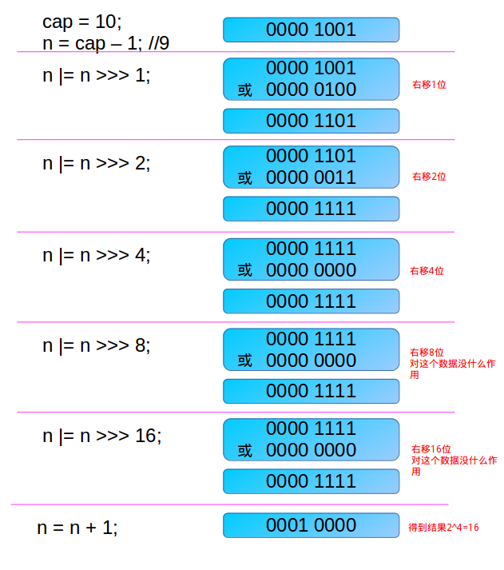

HashMap简介
Hashmap存储键值对，其根据键的hashCode值存储数据，大多数情况下可以直接定位到它的值，因而具有很快的访问速度，遍历顺序与插入顺序不一致。 HashMap最多只允许一条记录的键为null，允许多条记录的值为null。HashMap非线程安全，即任一时刻可以有多个线程同时写HashMap，可能会导致数据的不一致。
特点
- 根据键的hashcode值存储
- hashmap通过Node<K,V>类型的table数组存储数据
- hash冲突通过链表和红黑树解决，table数组中的元素指向链表或者红黑树
- 当链表长度大于8时，链表转为红黑树；当红黑树的节点个数少于6时，红黑树转为链表
源码阅读
参数
静态常量参数
//默认容量为16，hashmap的容量必须是2的正次幂
static final int DEFAULT_INITIAL_CAPACITY = 1 << 4; // aka 16
//最大容量，2^30
static final int MAXIMUM_CAPACITY = 1 << 30;
//装载因子，用于判断是否需要扩容
static final float DEFAULT_LOAD_FACTOR = 0.75f;
//链表转换为红黑树的阈值
static final int TREEIFY_THRESHOLD = 8;
//红黑树转为链表的阈值
static final int UNTREEIFY_THRESHOLD = 6;
//当哈希表中的容量大于这个值时，表中的桶才能进行树形化。否则桶内元素太多时会扩容，而不是树形化。
static final int MIN_TREEIFY_CAPACITY = 64;属性参数
//hash桶，数组长度是2的整次幂
transient Node<K,V>[] table;
//元素缓存set
transient Set<Map.Entry<K,V>> entrySet;
//元素个数
transient int size;
//修改次数，包括添加删除
transient int modCount;
//扩容的阈值，当size大于threshold进行扩容
int threshold;
//装载因子=(size/capacity),即所有元素比上桶的数量，默认0.75
final float loadFactor;构造方法
hashmap一共提供了三个构造方法，这三个方法仅仅是将给一些参数复制，并没有初始化table数组，而等到放入第一个元素时，即调用put方法时，数组才会初始化，后面讲诉。
//默认的构造方法，默认的加载因子为0.75，该地方没有指定大小，会在resize()方法中指定默认大小
public HashMap() {
this.loadFactor = DEFAULT_LOAD_FACTOR; // all other fields defaulted
}//指定大小，使用默认的加载因子0.75
public HashMap(int initialCapacity) {
this(initialCapacity, DEFAULT_LOAD_FACTOR);
}//指定大小个装载因子
public HashMap(int initialCapacity, float loadFactor) {
if (initialCapacity < 0)
throw new IllegalArgumentException("Illegal initial capacity: " +
initialCapacity);
if (initialCapacity > MAXIMUM_CAPACITY)
initialCapacity = MAXIMUM_CAPACITY;
if (loadFactor <= 0 || Float.isNaN(loadFactor))
throw new IllegalArgumentException("Illegal load factor: " +
loadFactor);
this.loadFactor = loadFactor; //设定装载因子
/*这个地方比较迷，如下：
1. threshold是指扩容的阈值，当size大于threshold时，数据会扩容。
2. tableSize返回的是最小的大于等于initialCapacity的2的整次幂，例如，给定10，返回16
3. 根据threshold的定义，其threshold = table.length*loadFactor
*/
/*
*你会发现，threshold大于等于初始化的大小，比数组大小还大，根据其定义根本无法扩容。
*当debug到数组初始化时，会发现将threshold赋值给数组的大小
*这里threshold就是代表数组的长度，而随后threshold会根据长度*加载因子计算出
*/
/*
我自己的想法如下：
1. HashMap中没有表示数组长度的参数，获取数组长度通过table.length获取
2. 因为没有表示长度的参数，所以先使用threshold暂时表示数组的长度
*/
this.threshold = tableSizeFor(initialCapacity);
}HashMap中table数组长度是2的整次幂，通过如下实现
初始化时，通过tableSizeFor()方法计算给定大小initialCapacity的最小的大于等于initialCapacity的2的整次幂，再通过threshold参数暂时表示数组长度。
//该方法实现：返回最小的大于等于输入参数cap的2的整次幂。 //原理如下: /* 先来假设n的二进制为01xxx…xxx * 对n右移1位：001xx...xxx，再位或：011xx...xxx * 对n右移2为：00011...xxx，再位或：01111...xxx * 每一操作就是将1的个数翻倍 * 该算法就是将最高位的1后面的位全变为1。 * 最后再n+1就可以得到2的整次幂了 * * 而对于最开始的cap-1是针对cap本身就是2的整次幂这种特殊情况 * 例如：当给定16，即10000时，若不减1，先会得到11111，再加1，得到100000，为32，扩大二倍 */ static final int tableSizeFor(int cap) { int n = cap - 1; n |= n >>> 1; n |= n >>> 2; n |= n >>> 4; n |= n >>> 8; n |= n >>> 16; return (n < 0) ? 1 : (n >= MAXIMUM_CAPACITY) ? MAXIMUM_CAPACITY : n + 1; }给一个详细的例子：

在resize()方法中，每次扩容都会将数组长度扩大二倍
if (oldCap > 0) { if (oldCap >= MAXIMUM_CAPACITY) { threshold = Integer.MAX_VALUE; return oldTab; } else if ((newCap = oldCap << 1) < MAXIMUM_CAPACITY && oldCap >= DEFAULT_INITIAL_CAPACITY)//oldCap左移一位，即扩大二倍 newThr = oldThr << 1; // double threshold，新的threshold为老的二倍 }
辅助方法
HashMap有几个非常重要的辅助方法，比如计算元素在table中位置的方法，即hash机制，以及每次table数组空间不够时要进行扩容时使用的扩容函数。
hash机制
hash机制主要是计算元素应该放在table数组哪一个位置，如下：
//1. 先去key的hashCode值，32位整数。
//2. 将hashCode无符号右移，即将高16位放在低16位上
//3. 将1和2的结果或，即hashCode的高16位与低16位或的结果放在低16位，高16位不变
//4. 高16位与低16与的好处就是可以使用hashcode的所有特征，增加随机性，利于数据分散
static final int hash(Object key) {
int h;
//无符号右移，左边部分总是以0填充，右边部分舍弃
return (key == null) ? 0 : (h = key.hashCode()) ^ (h >>> 16);
}
//下面是定位取数操作(选自put方法)，n表示数组的长度
//位置结果为n减1再与hash值与，分析如下
//1. n为2的整次幂，例如10000，减一之后为01111，设1的个数为x
//2. (n-1)与hash与，即保持后x位不变，前(32-x)位全为0，而后x位的值表示的就是该元素的下标
tab[i = (n - 1) & hash]例如，一个值经过hash之后为10100101 11000100 00100101，当前长度为16，即n-1=15，所以有如下结果
10100101 11000100 00100101
& 00000000 00000000 00001111 //15
----------------------------------
00000000 00000000 00000101 //高位全部归零，只保留末四位将数组长度设置为2的整次幂，当减1之后，得到的数就像一个掩码一样，取后面几位。
整体过程如下：

扩容机制
扩容机制是非常重要的,其保证table长度始终是2的整次幂。
扩容函数除了将数组扩大二倍之外，在初始化数组中也会应用到。
在resize()函数中，会先创建一个扩容后的数组，然后再将原来的数据移动到新的数组中，如下：
final Node<K,V>[] resize() {
Node<K,V>[] oldTab = table;
int oldCap = (oldTab == null) ? 0 : oldTab.length;
int oldThr = threshold;
int newCap, newThr = 0;
//第一步是先计算新的数组长度和扩容阈值，这里分为三种情况
//1. 已经初始化过数组，只需要将长度扩大二倍，扩容阈值扩大二倍，注意要检查是否超出最大的范围
if (oldCap > 0) {
if (oldCap >= MAXIMUM_CAPACITY) {
threshold = Integer.MAX_VALUE;
return oldTab;
}
else if ((newCap = oldCap << 1) < MAXIMUM_CAPACITY &&
oldCap >= DEFAULT_INITIAL_CAPACITY)
newThr = oldThr << 1; // 先将数据长度扩大二倍，再将扩容阈值扩大二倍
}
//下面两种情况是还没有初始化数组，现在要先进行初始化
// 2. 对于HashMap(int initialCapacity)，HashMap(int initialCapacity, float loadFactor)，这两种情况均指定了threshold,大小为2的整次幂，即代表数组的长度，现在将扩容阈值复制给数组长度
else if (oldThr > 0)
newCap = oldThr;
else { //3. 对于默认情况，仅定义了loadFactor，初始化为默认大小，扩容阈值=数组长度*扩容因子
newCap = DEFAULT_INITIAL_CAPACITY;
newThr = (int)(DEFAULT_LOAD_FACTOR * DEFAULT_INITIAL_CAPACITY);
}
//继续接情况2，2情况下只指明了数组大小，没有指明扩容阈值，下面计算扩容阈值
if (newThr == 0) {
float ft = (float)newCap * loadFactor; //计算扩容阈值
newThr = (newCap < MAXIMUM_CAPACITY && ft < (float)MAXIMUM_CAPACITY ?
(int)ft : Integer.MAX_VALUE);
}
threshold = newThr;
@SuppressWarnings({"rawtypes","unchecked"})
Node<K,V>[] newTab = (Node<K,V>[])new Node[newCap];//根据新长度new出一个数组
table = newTab;
//如果是第一次放元素，即oldTab为null，会直接返回新创建的数组
//第二步，将老数组中的元素移动到新数组中
if (oldTab != null) {
for (int j = 0; j < oldCap; ++j) {
Node<K,V> e;
if ((e = oldTab[j]) != null) { //获取老数组中的元素
oldTab[j] = null; //将老数组清空，垃圾回收
//将老数组中元素移动到新数组也分为三种情况
//1. 桶中只有一个元素
if (e.next == null)
//计算在数组中的位置的方法和之前一样
//注意这里是新的数组的长度，在二进制表示上，相当于多了一位1，会有下面两种情况
//假设，之前数组长度为16（15=1111），现在为32（31=11111）
//（1）.当其hash值第5位为1，则在新位置比老位置多了oldCap的长度
//（2）.当其hash值第5位为0，则在老位置不变换
newTab[e.hash & (newCap - 1)] = e;
else if (e instanceof TreeNode)//2. 桶中结构是红黑树
((TreeNode<K,V>)e).split(this, newTab, j, oldCap);
else { //3. 桶中结构是链表
//和桶中只有一个元素的情况一样，判断多出来的一位是0还是1
/** 首先是先将老数组的元素分发到两个链表中
* 多出的一位为0，将数据放在lohead，loTail链表中
* 多出的一位为1，将数据放在hiHead，hiTail链表中
*/
Node<K,V> loHead = null, loTail = null;
Node<K,V> hiHead = null, hiTail = null;
Node<K,V> next;
do {
next = e.next; //链表中下一个位置
//将多出一位为0的数，放在头元素是loHead，尾元素是loTail的链表中
if ((e.hash & oldCap) == 0) {
if (loTail == null)
loHead = e;
else
loTail.next = e;
loTail = e;
}
//将多出的一位为1的数，放在头元素是hiHead，尾元素是hiTail的链表中
else {
if (hiTail == null)
hiHead = e;
else
hiTail.next = e;
hiTail = e;
}
} while ((e = next) != null);
//将上述的两个链表放在对应的桶中
/** 由老数组存放到链表中时，是从头到尾遍历存放
* 而从链表存放到新数组中，是从尾到头逆序存放
* 因此新数组相对于旧数组会逆序
*/
//多出一位为0的，在原位置不动
if (loTail != null) {
loTail.next = null;
newTab[j] = loHead;
}
//多出一位为1的，新位置比原位置大了oldCap
if (hiTail != null) {
hiTail.next = null;
newTab[j + oldCap] = hiHead;
}
}
}
}
}
return newTab;
}上诉判断新坐标过程如下：
扩容前长度为16，key1的坐标为5，key2的坐标为5
扩容后长度为32，key1的坐标为5，key2的坐标为21

key2的变化如下：

常用操作
常用的操作主要有添加，删除，查找这三种，这里也主要阅读了这三个方法的源码。
添加
//put方法会将要添加的数据添加到对应的桶中，而且table数组的初始化也放生在第一次添加数据时
public V put(K key, V value) {
return putVal(hash(key), key, value, false, true);
}
final V putVal(int hash, K key, V value, boolean onlyIfAbsent,
boolean evict) {
Node<K,V>[] tab;
Node<K,V> p;
int n, i;
//数组还未初始化，调用resize()方法，返回初始化的数组
if ((tab = table) == null || (n = tab.length) == 0)
n = (tab = resize()).length;
//下面开始存放元素，分为3种情况
//1. 桶中没有任何元素，直接放
if ((p = tab[i = (n - 1) & hash]) == null)
tab[i] = newNode(hash, key, value, null);
else {
Node<K,V> e;
K k;
//仍然对应第一种情况，如果存在元素，key也相同，替换元素即可
if (p.hash == hash &&
((k = p.key) == key || (key != null && key.equals(k))))
e = p;
//2. 桶中有元素，结构为红黑树
else if (p instanceof TreeNode)
e = ((TreeNode<K,V>)p).putTreeVal(this, tab, hash, key, value);
else {
//3. 桶中有元素，结构为链表
for (int binCount = 0; ; ++binCount) {
//添加到链表尾部
if ((e = p.next) == null) {
p.next = newNode(hash, key, value, null);
//如果超过树形化的阈值，将链表转为红黑树
if (binCount >= TREEIFY_THRESHOLD - 1) // -1 for 1st
treeifyBin(tab, hash);
break;
}
//找到key相同的值
if (e.hash == hash &&
((k = e.key) == key || (key != null && key.equals(k))))
break;
p = e;
}
}
//当找到key相同时，替换元素
if (e != null) { // existing mapping for key
V oldValue = e.value;
if (!onlyIfAbsent || oldValue == null)
e.value = value;
afterNodeAccess(e);
return oldValue;
}
}
++modCount;
if (++size > threshold)
resize(); //判断是否需要扩容
afterNodeInsertion(evict);
return null;
}删除
public V remove(Object key) {
Node<K,V> e;
return (e = removeNode(hash(key), key, null, false, true)) == null ?
null : e.value;
}
final Node<K,V> removeNode(int hash, Object key, Object value,
boolean matchValue, boolean movable) {
Node<K,V>[] tab;
Node<K,V> p;
int n, index;
if ((tab = table) != null && (n = tab.length) > 0 &&
(p = tab[index = (n - 1) & hash]) != null) {
Node<K,V> node = null, e;
K k;
V v;
//删除分为三种情况，分两步
//第一步先找到要删除的元素
//1. 当桶中第一个即为删除元素时
if (p.hash == hash &&
((k = p.key) == key || (key != null && key.equals(k))))
node = p;
else if ((e = p.next) != null) {
//2. 当桶中结构为红黑树时
if (p instanceof TreeNode)
node = ((TreeNode<K,V>)p).getTreeNode(hash, key);
else {//3. 当桶中结构为链表时
do {
if (e.hash == hash &&
((k = e.key) == key ||
(key != null && key.equals(k)))) {
node = e;
break;
}
p = e;
} while ((e = e.next) != null);
}
}
//第二步删除找到的元素，也是分为红黑树，链表，桶中第一个元素三种情况
if (node != null && (!matchValue || (v = node.value) == value ||
(value != null && value.equals(v)))) {
if (node instanceof TreeNode)
((TreeNode<K,V>)node).removeTreeNode(this, tab, movable);
else if (node == p)
tab[index] = node.next;
else
p.next = node.next;
++modCount;
--size;
afterNodeRemoval(node);
return node;
}
}
return null;
}查找
public V get(Object key) {
Node<K,V> e;
return (e = getNode(hash(key), key)) == null ? null : e.value;
}
final Node<K,V> getNode(int hash, Object key) {
Node<K,V>[] tab;
Node<K,V> first, e;
int n;
K k;
//查找分为三种情况
if ((tab = table) != null && (n = tab.length) > 0 &&
(first = tab[(n - 1) & hash]) != null) {
//1. 桶中第一个元素即为查找的元素
if (first.hash == hash && // always check first node
((k = first.key) == key || (key != null && key.equals(k))))
return first;
if ((e = first.next) != null) {
//2. 桶中结构为红黑树
if (first instanceof TreeNode)
return ((TreeNode<K,V>)first).getTreeNode(hash, key);
do {//3. 桶中结构为链表
if (e.hash == hash &&
((k = e.key) == key || (key != null && key.equals(k))))
return e;
} while ((e = e.next) != null);
}
}
return null;
}